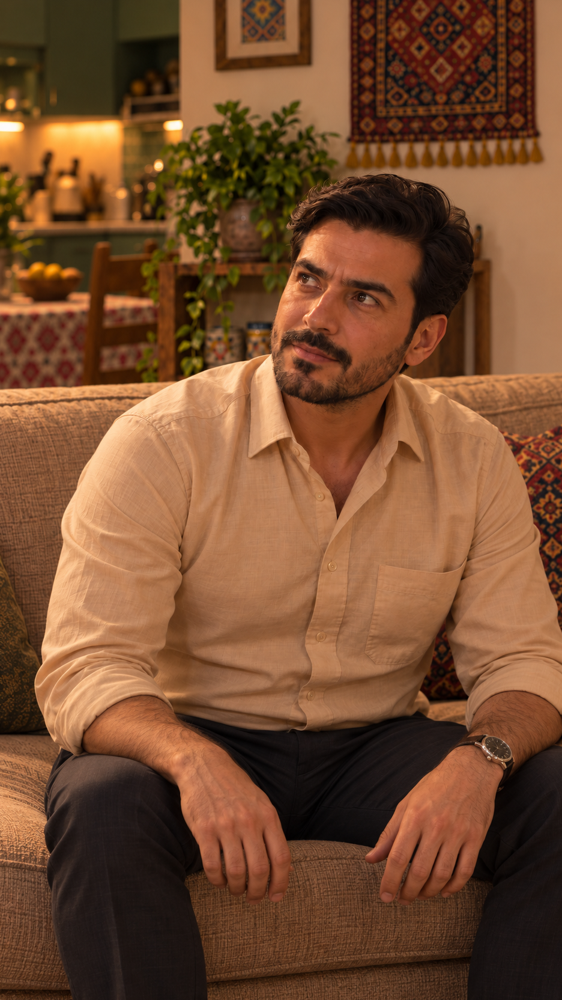
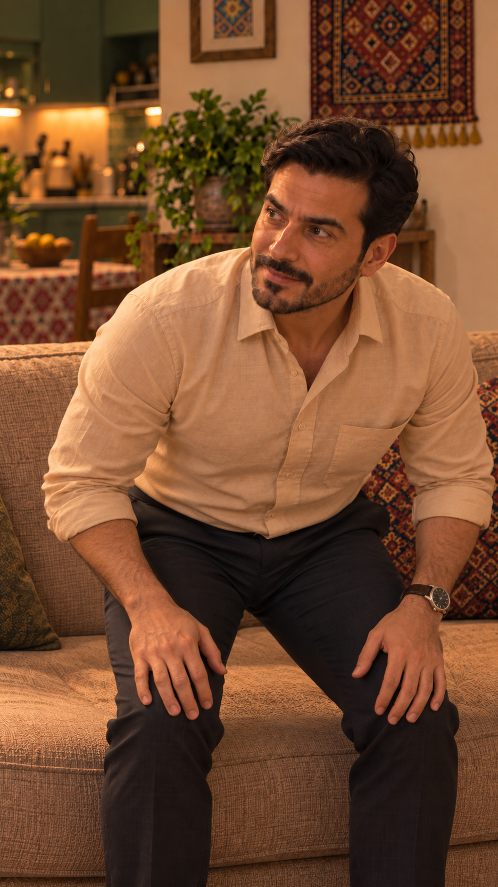
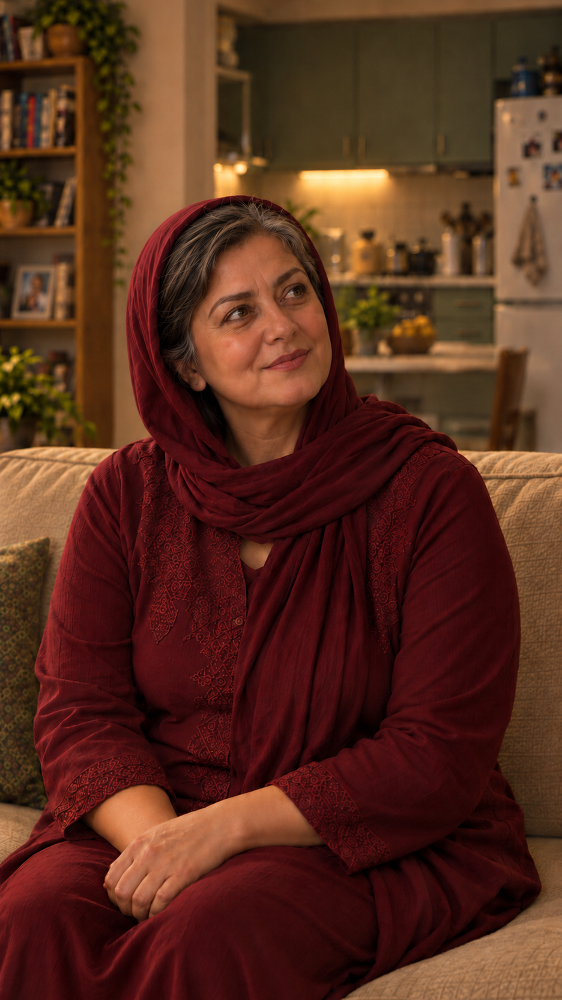
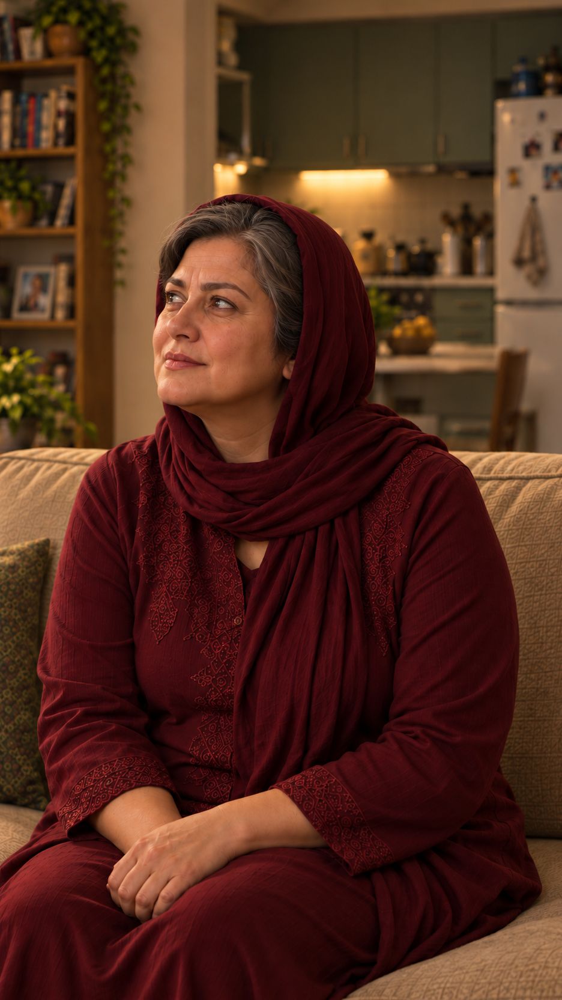

اتصال برخاستن فرهاد به نگاه مادر
طرح اتصال و عکسهای ثابت بررسی شدهاند؛ حرکت واقعی هنوز تولید نشده است. قابهای کمکی فقط مرجع حالت و جهت نگاهاند. همهٔ تصاویر این صفحه۹:۱۶دقیقاند.
بازگشت به بستهٔ تولید · همهٔ عکسهای دقیق · ثبت تصمیم و حدود بررسی

۱ · آغاز؛ فرهاد نشستهجمله را عادی میگوید؛ دستها روی ران خودش.

۲ · مرجع لحظهٔ قطع؛ شروع برخاستنبدن رو به جلو، لگن در شروع جداشدن؛ نگاه هنوز به جمع است. این عکس فقط مرجع حالت است، نه فریم واقعی ویدیو.

۳ · آغاز بدرقهٔ مادرنگاه راست و کمی بالا، دنبالکردن ادامهٔ برخاستن؛ چانه جهش یا عقبرفتگی شدید ندارد.

۴ · مرجع جهت نگاه به سامانپس از بدرقه، نگاه به چپ و بالا میرود. این عکس از پرسش قبلی فقط مرجع جهت نگاه و ظاهر است؛ دیالوگ آن تکرار نمیشود.
ترتیب پیشنهادی اجرا و قطع
| مرحله | کنش |
|---|
| پایان گفتار فرهاد | در آخرین بخش جمله، حوالی ثانیه۲٫۹تا۴٫۱۲۵سهم تدوین، وزن به پاها منتقل و برخاستن شروع شود؛ جمله کامل بماند. |
| قطع؛ زمان کل۳۵٫۷۹۲ثانیه | روی ادامهٔ حرکت رو به بالا به مادر قطع شود. مادر در بدرقه، نگاه راست را ملایم بالاتر میبرد؛ فرهاد خارج قاب ادامه میدهد. |
| پس از بدرقه | در مکث موجود، حدود ثانیه۲٫۰تا۲٫۵نمای مادر، سر و چشم به سامان در چپ و بالا برگردد؛ سپس جملهٔ خطاب به سامان شروع شود. |
| ادامه | فرهاد از کنار شرقی میز بیرون محدوده میرود؛ در نشان داده نمیشود. در پایان فاصله و جای بدن جوانها ثابت است. |
زمانهای بازی پیشنهادیاند و از سهم تدوین و تشخیص فعالیت گفتار گرفته شدهاند؛ تطبیق کلمهبهکلمهٔ شنیداری انجام نشده. تصویر برخاستن، جداشدن آغازین و خمشدن رو به جلو را نشان میدهد؛ ایستادن کامل و محل کف پاها از بخش خارج قاب قابلتأیید نیست.
متن مصوب؛ بدون تغییر
فرهاد:
خِیلی هَم عالی. مَنَم کَمکَم مُرَخَّص بِشَم.
مادر:
بُرو بِه سَلامَت، عَزیزَم. سامان، پَس با مادَرِت حَرْف بِزَن، بِبین فَردا میتونِه بیاد؟
در خروجی آینده باید دید که حرکت بدون پرش ادامه دارد، مادر به ارتفاع واقعی فرهاد نگاه میکند، دستها به کاناپه یا میز نفوذ نمیکنند و فرهاد دوباره ناگهانی نشسته ظاهر نمیشود. عکس ثابت شاهد انجام این کنترلها نیست.